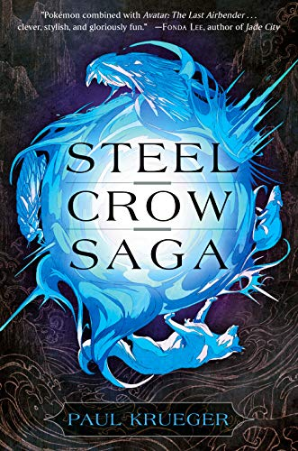
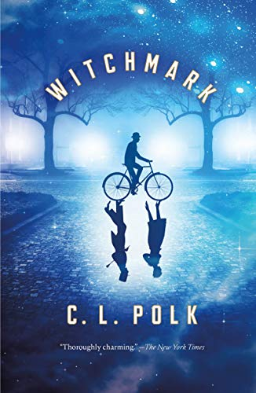

writers reviews
The best books of 2019
Erin Kodicek on November 12, 2019
When we reflect on the books that resonated most this past year, usually a trend emerges. But 2019 bucked the trend, turning out a wide variety of gems to satisfy readers of all stripes. One of the stand-out literary stories of the year, however, was the highly-anticipated sequel to a modern dystopian classic. Would Margaret Atwood's The Testaments, the follow-up to 1985's The Handmaid's Tale, live up to the hype? It absolutely does, topping our list, and besting stiff competition from the likes of Colson Whitehead, Salman Rushdie, Erin Morgenstern, and many more. Atwood has said that this tale of hope and courage narrated by three strong female voices appears to have connected to this crucial 2019 moment. We couldn't agree more.
Crowning our list in the kids' category is Dear Sweet Pea by Julie Murphy, her middle-grade debut about Patricia Sweet Pea DiMarco, a seventh grader grappling with a myriad of emotions and change, including recently divorced parents and friendships in transition. Dear Sweet Pea is a warmhearted read that is at once reassuring, wise, and utterly relatable.
Below you'll find our top picks for the best books of 2019.
The Testaments by Margaret Atwood
 |
Praise be! After almost 35 years, Margaret Atwood released the sequel to her pioneering work of speculative fiction, The Handmaid's Tale, and it is well worth the wait. While The Handmaid's Tale explored how totalitarian regimes come to power, The Testaments delves into how they begin to fracture. At 80 years young, Atwood is at the top of her game. -Erin Kodicek |
The Nickel Boys by Colson Whitehead
|
Having earned a Pulitzer and a National Book Award with his last novel, The Underground Railroad, Colson Whitehead follows up with a story about two young black men sent to the infamous Nickel Academy in Florida. Set during the 1960s Jim Crow era, the story follows Elwood and Turner who, despite different backgrounds and world views, learn to lean on one another to survive. -Chris Schluep |
Weekend reading
Chris Schluep on November 08, 2019
This weekend, the common theme among the books is reading is change. That's probably appropriate during these autumnal days when the leaves are falling.
(I hear snow is falling somewhere across the country, too-yikes.) The end of daylight saving time, which brings early darkness, reminds us, too, that things change.
So we are taking home books about changes in our habits, in our bodies, and in our eating. There's a book about coming of age (in the shadow of celebrity no less),
and even a book about changes in the geography of genius. There is also a book set in Manhattan's Chinatown, which doesn't fit neatly into the change theme. No matter. I have made
my bed and I will sleep in it. So cue the David Bowie song. Turn and face the strange. Or the falling leaves. Or the snow. Or the early evening darkness. And remember that a good book is
a good way to center yourself during all this change. Even if the book you are reading is about change.
so here are two books which i would like to appreciate and recommend everyone to have a look at.
Long Way Home by Cameron Douglas
|
I'd wanted to read Cameron Douglas memoir, Long Way Home when it first released but then I saw that there is an audible edition and Douglas reads it himself. It' is totally insane. And so hard to stop listening to. Douglas voice is unique, it has almost a surfer/stoner inflection but with excellent diction. And he lays his life out in full. The good (which mostly comes later) and a whole lot of bad and ugly. He never tries to sugarcoat his behavior and he offers up some pretty vulnerable feelings and realizations about himself. His drug addiction and subsequent YEARS in prison are a serious cautionary tale he ends up doing approximately six years in prison, and that's having both a father and grandfather who are wealthy, marquee name celebrities. Think about that one for a minute. I've thus far found myself very taken with Douglas' story and his kind of quirky writing style. I've loved the insider perspective and detail of the various worlds he inhabited from East Coast boarding school to the international DJ scene, to prison life and I'm looking forward to see what is happening in his life at the point at which he wraps up his journey in the book. -Seira Wilson |
Flash Count Diary: Menopause and the Vindication of Natural Life by Darcey Steinke
|
I've heard about this book from a few people in my life recently. And I dont know if my electric blanket is turned up too high or if the Change is upon me, but this weekend while the leaves are turning colors and were planting tulip bulbs in preparation for spring blooms seems like an excellent time to dig into this whole menopause thing. Ask me on Monday what I learned, because the one thing I know already is that by not talking about menopause, we keep it in the shadows and prolong our ignorance. High-fives to the ladies in my life who are already talking about it. -Adrian Liang |
Celebrity picks:
Erin Morgenstern's favorite recent reads
Chris Schluep on November 04, 2019
|
Erin Morgenstern became one of the more memorable authors to appear this decade when The Night Circus was published in 2011. The Night Circus was a mesmerizing, fantastical read that quickly became a best seller. And it was a debut novel, which thrilled audiences and left a lot of readers waiting for another book from a favorite new author. That wait is finally over. Morgenstern's second novel, The Starless Sea, is set in a world as iconic and memorable as the one readers encountered in her first novel. In this new book, readers will discover a secret underground world a place of pirates, painters, lovers, liars, and ships that sail upon a starless sea. And, as Amazon Senior Editor Seira Wilson tells it, the novel "is a love letter to books and readers, a masterpiece of stories within a story." She goes on to explains that our protagonist, Zachary Ezra Rawlins, "falls in love first with a book and later a person, both of which compel him to embark on a dangerous journey through time and place, lost loves, and lives lived again and again." Where does an author as talented as Morgenstern turn when she wants to read a book? Find out below. |
Steel Crow Saga by Paul Krueger
|  |
Steel Crow Saga was already on my radar when my friend Chuck Wendig recommended it and happened to mention that it was a standalone. The word standalone is like catnip for me, because I don't always have the patience for series and I love a self-contained fantasy. But I would happily spend more time in this incredibly vivid, masterfully drawn world. I burst into tears when I finished reading, just because the story was over. |
The Unwilling by Kelly Braffet
|
I haven't fallen into a book the way I fell into The Unwilling in years. I fell in deep and didn't have any desire to come back out again. I was already a Kelly Braffet fan, so I was incredibly curious to see what she would do with a fantastical narrative, and this book exceeded my wildest expectations. I keep thinking about the world and the characters even weeks after reading, and I am certain that I will return to it again and again and again. |
The 2019 World Fantasy Award winners
Adrian Liang on November 04, 2019
The World Fantasy Awards were announced on Sunday, November 3, in Los Angeles at the World Fantasy Convention. The awards celebrate the best fantasy works published in 2018. Lifetime achievement awards were given to Hayao Miyazaki and to Jack Zipes. Read on to see who won the novel, anthology, and collection awards. Congratulations to the winners and the nominees!
BEST NOVEL
Witchmark (The Kingston Cycle Book 1) by C. L. Polk
|  |
In an alternate England, Miles Singer has come back from war a changed man. The ability to do magic has set him apart in a world where magic-users live at the highest levels of society, but Miles only wants to heal people at a local veterans hospital, and he keeps his abilities and his witchmark secret. But his witchmark cannot be hidden forever, and exposure thrusts him back into a world held hoped held left behind forever. |
|
In 2008, Tor.com started bringing excellent short-form science fiction and fantasy stories to readers, and almost singlehandedly relaunched the moribund SF and fantasy novella category. This collection brings together stories published inthe last 10 years by Yoon Ha Lee, N. K. Jemisin, Carrie Vaughn, Charlie Jane Anders, and Jeff VanderMeer, among many, many other talented authors. |
BEST COLLECTION
The Tangled Lands by Paolo Bacigalupi and Tobias Buckell
|
As toxic vines slowly encroach on the citizens of a crippled empire, magic becomes a quality that others will kill for. But using magic causes the vines to grow even faster,
putting those without magic into peril. Paolo Bacigalupi and Tobias Buckell team up to create four character-driven interrelated stories that tackle despotism and the struggle
for justice.
|